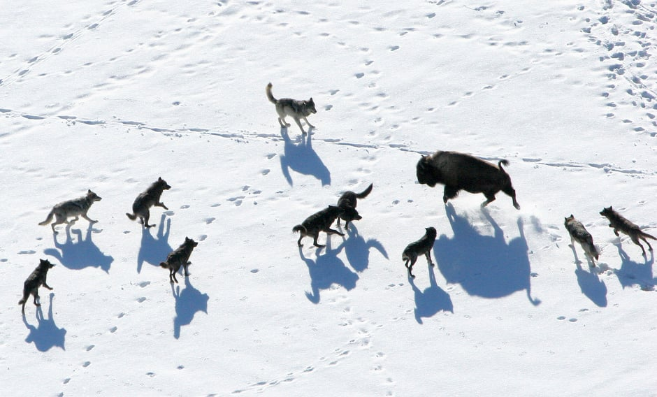
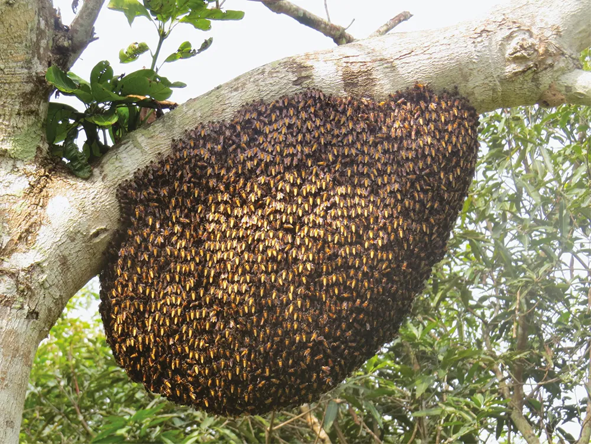
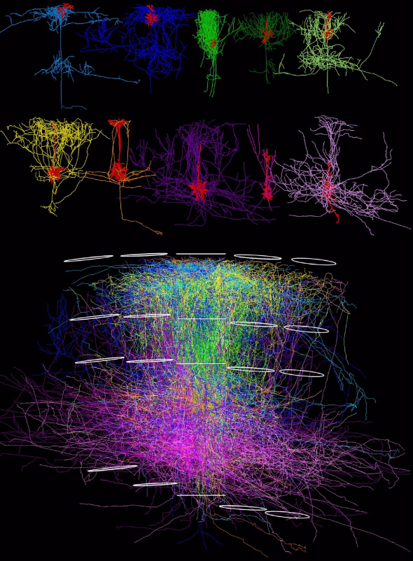

Understanding intelligent predictive systems through a comparative analysis of latent spaces
SURF Project by Sam Fatehmanesh
Advised by James Gornet and Matt Thomson
Thomson Laboratory
Caltech
Presentation Outline
- Research Question and Background
- Research Overview
- Future Research
- Acknowledgements and References
Prediction is everywhere


The hardware of prediction

Is prediction performed similarly across biological and artificial systems?
Understanding prediction enables better predictions
Research Overview
- Predictor Systems
- In Vitro Optically Interfaced Neuron Culture (In Progress)
- In Vivo mouse visual cortex (Provided by Allen Brain Observatory)
- In Silico Artificial Neural Network (ANN) predictor (Completed)
- Intermediate prediction representations
- The intermediate representations/latents of the predictors may hint at how prediction is being performed
- ANN intermediate latents extracted from sequential model
- In vitro neuron culture latents extracted with calcium imaging
- In vivo mouse visual cortex latents provided by Allen Brain Observatory
- Comparative Analysis of Latents
- Linear transform between latent spaces
- Feature identifications between latents and objective via non-linear transforms
Artificial Prediction Example
True Observations
Predicted Observations
Embodied Neuron Culture Overview
- Requirements
- Arbitrary read-write access
- Long-Term Culture Survival
- Plasticity and Learning
- Culture Development
- Optogenetic rat line
- Utilizing genetically encoded opsins and biosensors, e.g., GCaMP, ChRger2
- Optogenetics allows for signal input and output from neurons in rat cortex neurons
- Rat brain neurons extracted and cultured
- Optical Interface
- CMOS sensor for neuron spike output (Guo)
- microOLED display for neuron spike input
- Virtual Environment
- Neuron Culture training performed with periodic signal rewards and random signal punishments (Kagan)
- Improving predictions rewarded
- Worsening predictions punished
Neural Culture Interaction System
- Requirements
- Prediction of Neural Culture Activity
- Arbitrary Control of Neural Culture
- Methods used
- Prediction achieved via convolutional neural networks and Mamba sequential predictor
- Control to be achieved via soft actor-critic reinforcement learning algorithm
True Observations
Predicted Observations
Optical Neural Interface (ONI) v0
- Interface Hardware Rough Specs
- Sony OV2311 CMOS sensor for neural output recording
- Sony OLED ECX337AF display for neural input stimulation
- Dichroic mirror enables simultaneous read-write

ONI v0 CAD
Acknowledgements
- James Gornet
- Matt Thomson
- Daniel Wagenaar
- Caltech SFP Office
References
-
- Gornet, J. A., & Thomson, M. (2023). Automated construction of cognitive maps with predictive coding. bioRxiv, 2023-09.
- Guo, C., Blair, G. J., Sehgal, M., Sangiuliano Jimka, F. N., Bellafard, A., Silva, A. J., ... & Aharoni, D. (2023). Miniscope-LFOV: A large-field-of-view, single-cell-resolution, miniature microscope for wired and wire-free imaging of neural dynamics in freely behaving animals. Science advances, 9(16), eadg3918.
- Kagan, B. J., Kitchen, A. C., Tran, N. T., Habibollahi, F., Khajehnejad, M., Parker, B. J., ... & Friston, K. J. (2022). In vitro neurons learn and exhibit sentience when embodied in a simulated game-world. Neuron, 110(23), 3952-3969.
- Grill, J. B., Strub, F., Altché, F., Tallec, C., Richemond, P., Buchatskaya, E., ... & Valko, M. (2020). Bootstrap your own latent-a new approach to self-supervised learning. Advances in neural information processing systems, 33, 21271-21284.